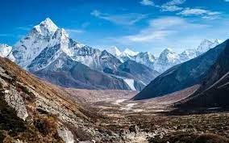

How Are Mountains Formed?

The world's tallest mountain ranges form when pieces of Earth's crust—called plates—smash against each other in a process called plate tectonics, and buckle up like the hood of a car in a head-on collision. The Himalaya in Asia formed from one such massive wreck that started about 55 million years ago. Thirty of the world’s highest mountains are in the Himalaya. The summit of Mount Everest, at 29,035 feet (8,850 meters), is the highest point on Earth.
The tallest mountain measured from top to bottom is Mauna Kea, an inactive volcano on the island of Hawaii in the Pacific Ocean. Measured from the base, Mauna Kea stands 33,474 feet (10,203 meters) tall, though it only rises 13,796 feet (4,205 meters) above the sea.
Volcanic mountains form when molten rock from deep inside the Earth erupts through the crust and piles up on itself. The islands of Hawaii were formed by undersea volcanoes, and the islands seen above water today are the remaining volcano tops. Well-known volcanoes on land include Mount St. Helens in Washington State and Mount Fuji in Japan. Sometimes volcanic eruptions break down mountains instead of building them up, like the 1980 eruption that blew the top off Mount St. Helens.
When magma pushes the crust up but hardens before erupting onto the surface, it forms so-called dome mountains. Wind and rain pummel the domes, sculpting peaks and valleys. Examples include the Black Hills of South Dakota and the Adirondack Mountains of New York. Plateau mountains are similar to dome mountains, but form as colliding tectonic plates push up the land without folding or faulting. They are then shaped by weathering and erosion.